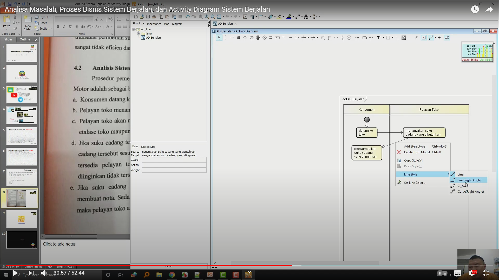

NIM : 1811500025
Nama : Jimmy Ngui
Kelompok : TI6A
Hasil dari menyadur saya di Pertemuan 2 :
1. Perhitungan Absen dan Nilai Tugas di Pertemuan 2 dengan cara membuat file index.html di dalam directory pertemuan ke 2
(tiap pertemuan wajib membuat file index.html di directory tiap pertemuan),
untuk nilai tugas berdasarkan isi file yang disadur.
2. Melihat dan Mencoba Memahami Studi Kasus Pembahasan yang berupa Analisi Masalah, Analisis Sistem Berjalan, dan lainnya terhadap suatu bisnis.
3. Activity Diagram menggambarkan proses yang sedang berjalan.
4. Mempelajari, memahami, melihat tentang apa itu Activity Diagram di situs/sumber manapun.
5. Memahami Tutorial penggunaan ASTACommunity.
6. Memahami Teknik Penggunaan simbol pada Activity Diagram.
7. Cara agar file Asta dapat dimasukkan kedalam M.Word .
Sample Image :
